Andras_Arato_02_v2_nobald
bridge: 3.65 → 4.67 px；nose: 6.13 → 3.80 px；lip: 10.48 → 6.35 px；chin: 3.51 → 5.82 px；eyes: 6.74 → 4.36 px；iris: 6.27 → 4.23 px
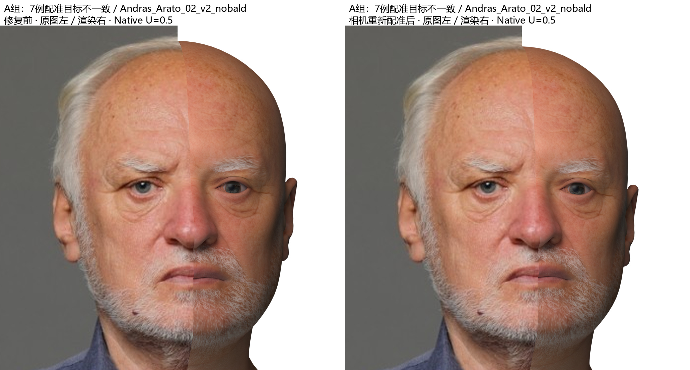
每格左半是真人原图，右半是渲染，沿各自相机投影的 Native U=0.5 切分。原图保持同一1024画幅；未做二维人脸变形。头部几何、UV、皮肤贴图与灯光保持不变。数值是自动关键点区域RMS，不代表零误差或人工真值。
bridge: 3.65 → 4.67 px；nose: 6.13 → 3.80 px；lip: 10.48 → 6.35 px；chin: 3.51 → 5.82 px；eyes: 6.74 → 4.36 px；iris: 6.27 → 4.23 px

bridge: 6.74 → 2.39 px；nose: 7.25 → 2.99 px；lip: 12.48 → 8.56 px；chin: 7.98 → 3.38 px；eyes: 7.09 → 3.20 px；iris: 7.26 → 2.50 px。仍有区域达到8px复核阈值，不能标为完全对齐。
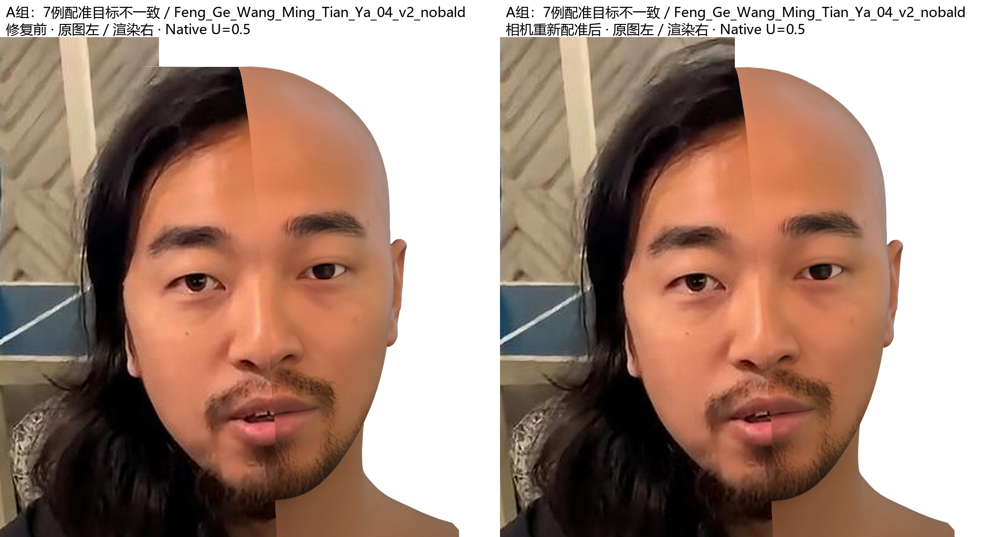
bridge: 7.44 → 1.50 px；nose: 5.01 → 1.14 px；lip: 5.73 → 3.70 px；chin: 9.48 → 2.98 px；eyes: 6.56 → 1.85 px；iris: 5.90 → 3.70 px
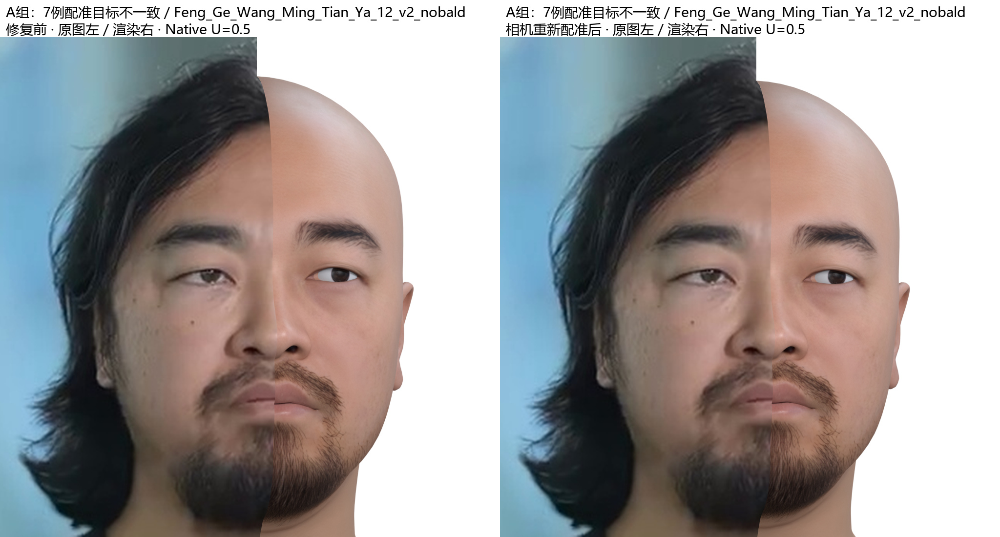
bridge: 9.23 → 2.25 px；nose: 3.71 → 2.32 px；lip: 5.49 → 4.46 px；chin: 5.10 → 2.51 px；eyes: 10.96 → 2.78 px；iris: 8.54 → 2.58 px
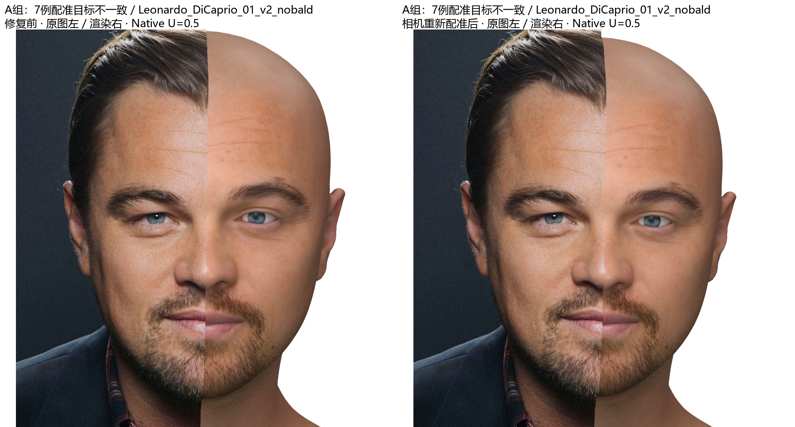
bridge: 12.99 → 1.56 px；nose: 9.93 → 1.59 px；lip: 7.21 → 4.51 px；chin: 6.92 → 2.13 px；eyes: 11.66 → 1.90 px；iris: 10.03 → 2.12 px
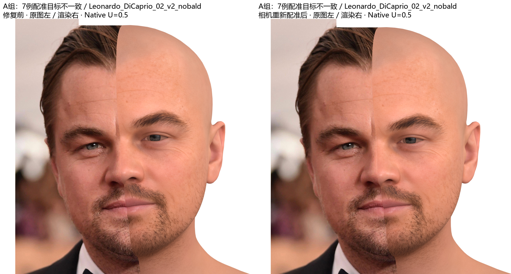
bridge: 11.25 → 1.28 px；nose: 8.77 → 2.61 px；lip: 6.62 → 5.99 px；chin: 8.19 → 2.36 px；eyes: 13.99 → 4.00 px；iris: 10.72 → 2.60 px
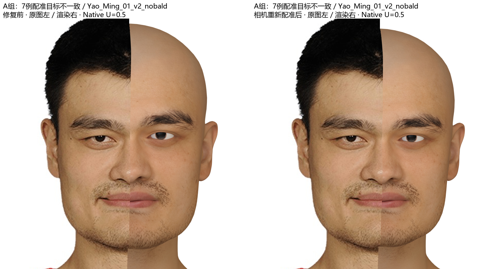
bridge: 3.25 → 0.92 px；nose: 3.83 → 2.28 px；lip: 3.30 → 4.92 px；chin: 5.40 → 2.54 px；eyes: 4.06 → 4.33 px；iris: 3.80 → 3.30 px
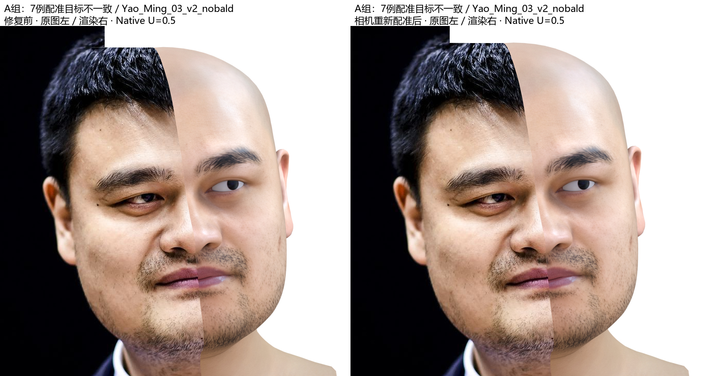
bridge: 1.45 → 4.51 px；nose: 2.27 → 4.19 px；lip: 7.80 → 5.45 px；chin: 4.52 → 3.66 px；eyes: 4.99 → 4.82 px；iris: 2.13 → 2.03 px；平均误差未下降：当前候选主要降低最差区域误差，不能视为整体改善。
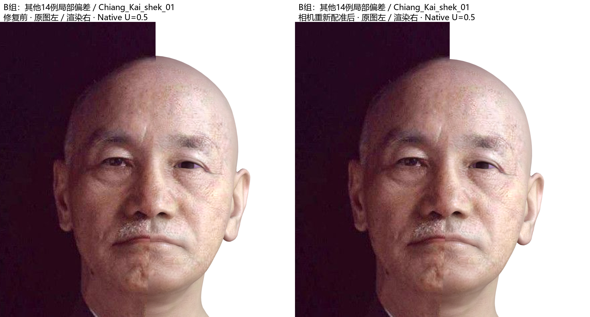
bridge: 13.19 → 11.12 px；nose: 5.49 → 5.98 px；lip: 7.71 → 7.41 px；chin: 6.96 → 7.09 px；eyes: 4.56 → 3.33 px；iris: 1.81 → 3.47 px。仍有区域达到8px复核阈值，不能标为完全对齐。
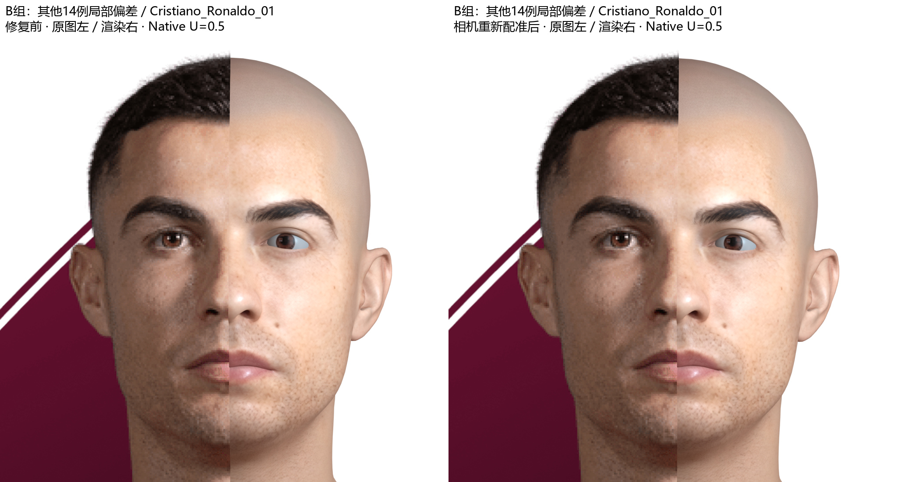
bridge: 5.51 → 3.71 px；nose: 6.08 → 4.11 px；lip: 8.43 → 6.97 px；chin: 3.72 → 6.47 px；eyes: 7.50 → 6.45 px；iris: 3.47 → 3.42 px
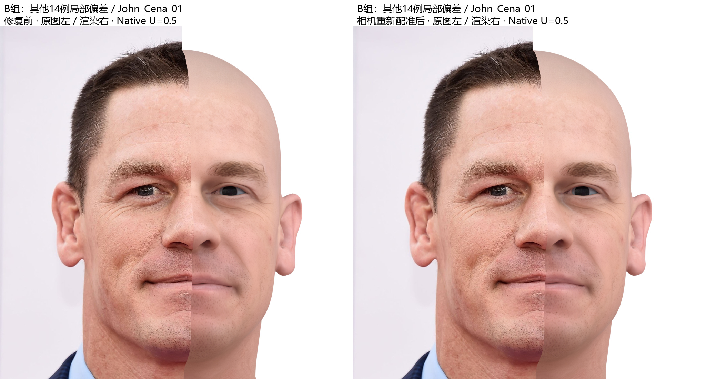
bridge: 2.67 → 1.96 px；nose: 3.26 → 3.12 px；lip: 6.71 → 5.83 px；chin: 3.51 → 5.58 px；eyes: 8.38 → 7.34 px；iris: 5.36 → 3.68 px
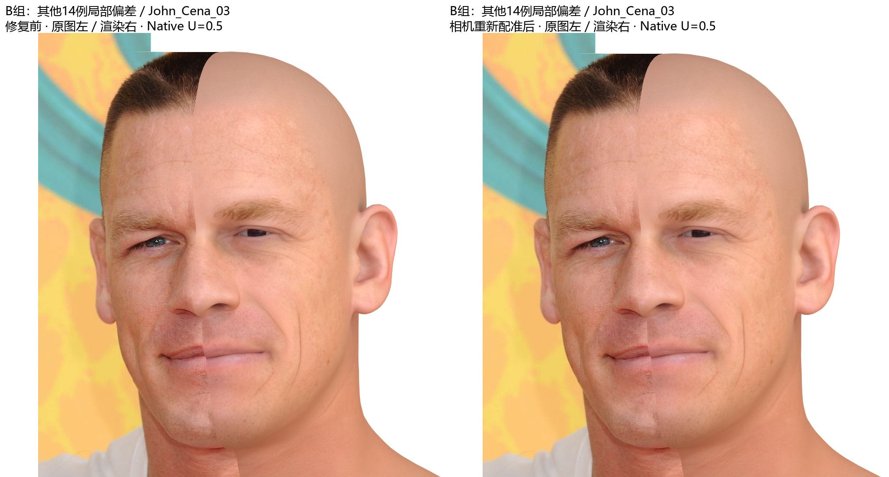
bridge: 6.66 → 7.12 px；nose: 3.03 → 3.08 px；lip: 4.31 → 4.28 px；chin: 4.30 → 4.54 px；eyes: 4.80 → 4.94 px；iris: 2.21 → 2.21 px。本轮候选未优于原版，保留原相机；未解决。
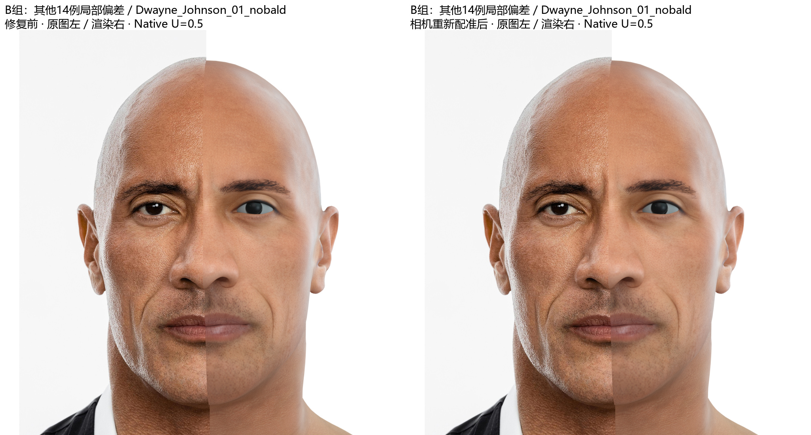
bridge: 7.65 → 6.34 px；nose: 2.80 → 2.84 px；lip: 8.03 → 6.78 px；chin: 2.72 → 3.84 px；eyes: 5.04 → 3.96 px；iris: 4.10 → 2.99 px
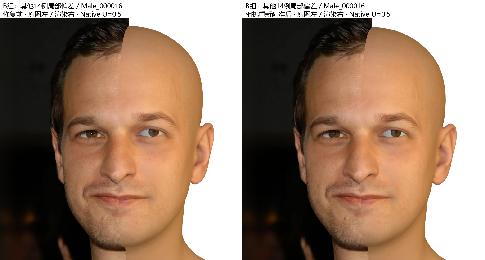
bridge: 2.25 → 1.35 px；nose: 2.40 → 2.47 px；lip: 7.33 → 6.90 px；chin: 5.98 → 5.59 px；eyes: 7.56 → 6.95 px；iris: 5.52 → 5.32 px
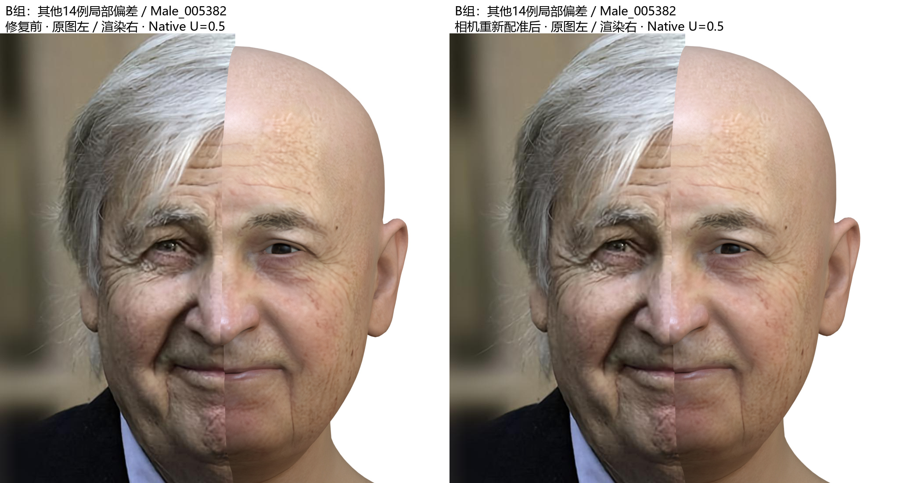
bridge: 1.51 → 2.60 px；nose: 2.03 → 3.31 px；lip: 8.50 → 6.73 px；chin: 5.65 → 3.69 px；eyes: 5.97 → 3.98 px；iris: 4.08 → 2.59 px
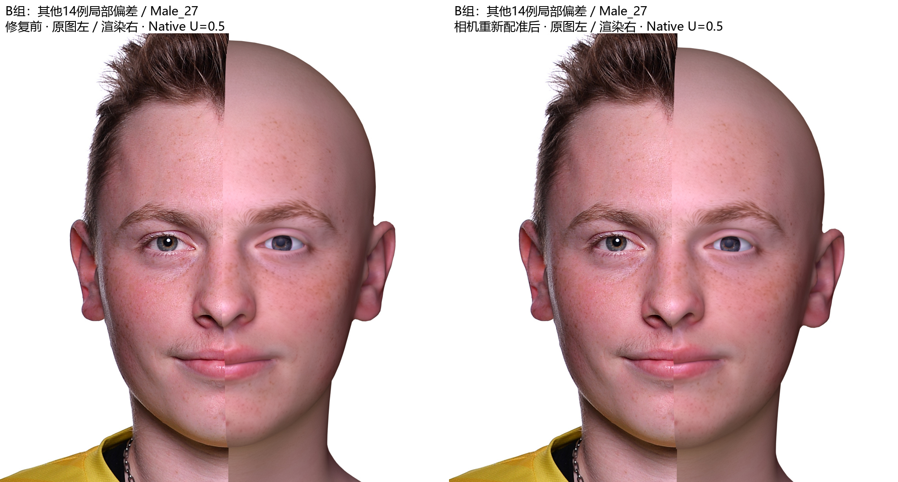
bridge: 3.86 → 2.11 px；nose: 2.81 → 2.61 px；lip: 9.59 → 8.96 px；chin: 1.29 → 3.13 px；eyes: 4.85 → 2.97 px；iris: 3.51 → 1.67 px。仍有区域达到8px复核阈值，不能标为完全对齐。
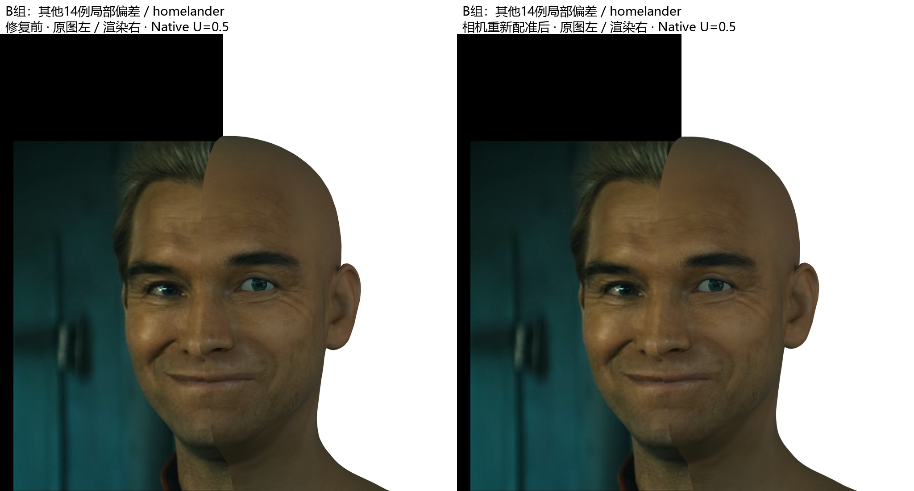
bridge: 1.45 → 2.29 px；nose: 3.17 → 2.73 px；lip: 8.50 → 7.61 px；chin: 4.79 → 4.75 px；eyes: 5.05 → 4.37 px；iris: 2.58 → 2.39 px
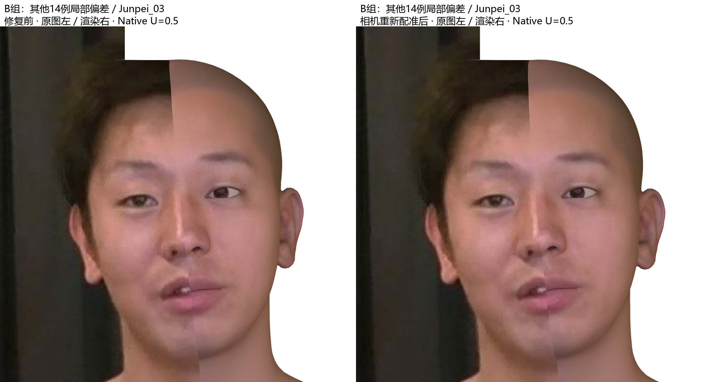
bridge: 4.29 → 4.67 px；nose: 4.42 → 2.56 px；lip: 9.78 → 6.84 px；chin: 5.70 → 7.25 px；eyes: 4.41 → 3.37 px；iris: 5.76 → 1.98 px
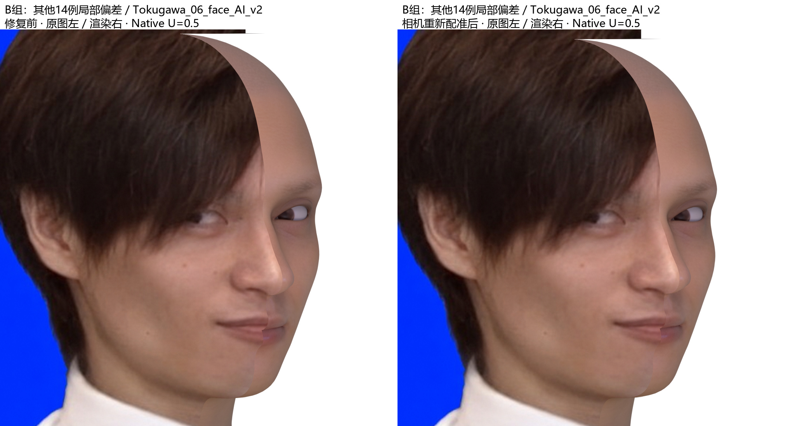
bridge: 6.79 → 5.04 px；nose: 4.38 → 3.30 px；lip: 8.11 → 7.13 px；chin: 3.38 → 6.43 px；eyes: 6.16 → 5.23 px；iris: 4.73 → 2.45 px
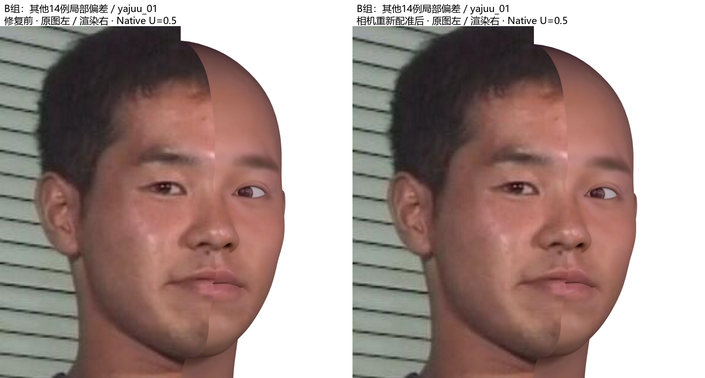
bridge: 2.72 → 2.60 px；nose: 2.49 → 3.93 px；lip: 8.72 → 4.22 px；chin: 3.32 → 2.51 px；eyes: 5.50 → 3.34 px；iris: 3.97 → 2.30 px
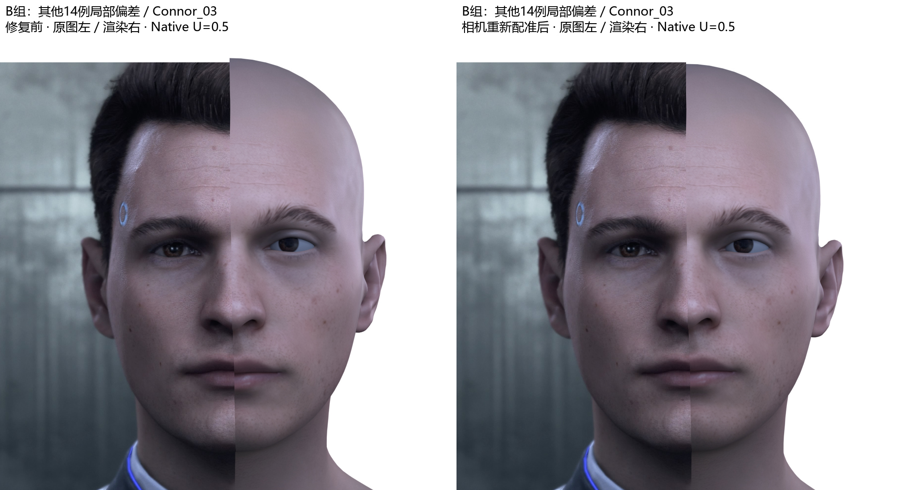
bridge: 1.52 → 0.88 px；nose: 1.92 → 2.54 px；lip: 2.43 → 3.45 px；chin: 7.79 → 7.23 px；eyes: 3.98 → 2.47 px；iris: 4.67 → 2.60 px
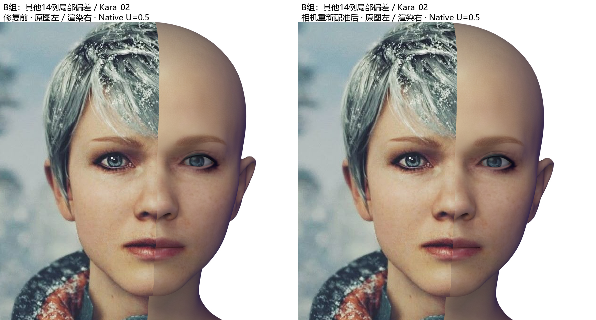